光と音で、
感情が動く瞬間を
デザインする


Featured Works

Sanrio Virtual World Award 2025受賞作品
音楽ゲーム × タワーディフェンスを融合した
協力型リズムアクション
担当範囲 / 開発体制
【担当】
- 企画立案
- ゲームシステム設計
- プログラム実装（UdonSharp）
- シェーダー制作（HLSL / Amplify）
- 3Dモデリング
- サウンド制作（BGM / SE）
【他メンバー】
- 脚本 / 企画補助
- モーション制作
- 制作進行
コアシステムの設計・実装を一貫して担当
技術的アプローチ（演出制御）
【課題】
VRChatではパーティクル頂点を
C#から動的制御できない
【解決】
ジオメトリシェーダーを使用し、
光粒子の生成・制御をGPU側で実装
プレイヤー入力をトリガーとして
色変化・拡散・発光をリアルタイム制御
【結果】
- CPU負荷を抑えた軽量な演出
- 高密度な光表現
- 同期性の高い演出制御を実現
課題と意思決定 / 再設計
未経験技術 × VRChat制約
- UdonSharpの制限環境
- シェーダー開発の新規習得
IPとしての表現制約
- サンリオの世界観を維持
- 可愛さとゲーム性の両立
テストで評価が得られない
- 完成度80%時点で低評価
制作進行を追加し、仕様を再検討
ゲーム性を根本から再設計
既存実装の大部分を見直し、方向転換を実施
成果 / 使用技術
【成果】
- Sanrio Virtual World Award 唯一受賞
- サンリオVfesにて公開
- 累計 約55,000人が来場
【使用技術】
VirtualDiceParty
深海博物館ル・リエー
VRChatの大型イベント「VirtualDiceParty」の展示会場として制作したワールド。
クトゥルフ神話の海底都市“ルルイエ”をモチーフに、約60の展示エリアを持つ大規模構成を実現。
60エリアを成立させるための設計
大規模構造 × 効率的モデリング
全体マップ or 構造図
同一モジュールの繰り返し図
軽量化・効率化の工夫
【課題】
60の展示エリアを持つ大規模空間において、
制作コストとパフォーマンスの両立が必要だった。
【解決アプローチ】
- 展示エリアを“モジュール化”し共通構造として設計
- 同一モデルの再利用による制作工数の大幅削減
- ライティング・配置の変化で印象差を演出
【結果】
- 短期間で大規模ワールドを構築
- VRChat上での動作負荷を抑制
- イベント用途として安定運用を実現
同じ構造が、徐々に“異質”へ変わる体験設計
反復構造 × 恐怖演出設計
同じ部屋の比較（初期→後半）
展示物の変化
照明・色の変化
設計意図
同一構造の繰り返しによる“安心感”をベースに、
徐々に違和感を増幅させることで恐怖体験へ転換。
演出手法
- 展示物を段階的に変化（正常 → 異形）
- 照明の色・明度を変化
- 空間の密度や配置を歪ませる
体験効果
- プレイヤーが“気づく恐怖”を誘発
- 探索の継続動機を維持
- 物語的な没入感を強化
探索からアトラクションへ
ライド体験 × Timeline制御
潜水艦ライドのカット
タイムラインのスクショ
演出の流れ図
クライマックス設計
最終エリアでは潜水艦ライドにより、
深海の沈没船を探索するアトラクションを実装。
技術実装
- Unity Timelineによる演出制御
- 移動、カメラ、エフェクト、音響を同期
- プレイヤー操作を排したシネマティック体験
演出意図
- 探索体験の“報酬”としての演出
- 世界観のピークを形成
- 印象に残るエンディングを設計
大手前大学
オープンキャンパス
本ワールドは、大手前大学のオープンキャンパス向けに制作したVR空間です。
エレベーター、螺旋階段、屋上庭園、茶室など、
異なるテイストの空間を一つのワールドとして違和感なく接続することを目指しました。
複数の空間をつなぐ構成と導線設計
空間設計・演出
コンクリート調の無機質な螺旋階段
温かみのある屋上庭園
伝統的な茶室空間
統合と導線
本ワールドでは、大きく雰囲気の異なる3つの空間を一つに統合しています。
これらを不自然さなく接続するため、エレベーターから始まる導線設計を採用しました。
場面転換の演出
エレベーターによる「場面転換」を演出の起点とすることで、プレイヤーに違和感を与えず空間の切り替えを実現しています。
制御スクリプト
また、簡易的なスクリプトを用いて、演出の発火や遷移タイミングの制御をシームレスに行っています。
建築再現とデザイン対応力
デザイン・モデリング
クライアントからの要望として、安藤忠雄風の建築表現が求められました。
特に螺旋階段では、コンクリートの質感や光の入り方にこだわり、シンプルながら印象的な空間を目指しています。
また、茶室エリアでは、大学内に実在する伝統的な茶室を参考に再現を行い、空間の説得力を高めました。
【制作フロー】
デザイン作成
モデリング進行
AIブラッシュアップ
(Gemini活用)
再モデリング調整
技術選定と制約への対応力
技術・制作条件への対応
制作条件・制約
権利上の制約により、クライアントに「有料アセットの購入を依頼することができない」という厳しい条件がありました。
対応アプローチ
植物：無料アセットを積極活用
建築・主要物：すべて自作モデリング構成
ライトベイク（ベイクライティング）に注力し、
無理のないアセット環境下でも自然で説得力のある光表現を実現。
【使用ツール】
Show by rock
デルミンDJ
サンリオ「SHOW BY ROCK!!」の世界観を再現したワールド内の地下ライブハウスにて、キャラクター「デルミン」がDJパフォーマンスを行うライブ演出を制作。
30分×2セットの長尺DJライブに対応するため、UnityのTimelineを中心とした演出制御を設計。
映像・ライティング・パーティクル・シェーダーを統合し、音楽と同期した没入感の高いライブ体験を実現。
演出設計と効率化
長尺ライブを支える設計と素材活用
長尺ライブを成立させる設計
- 30分×2セットという長時間演出に対応するため、Timelineの構造を整理・最適化
- トラック構成や制御単位をルール化し、編集・再利用がしやすい設計に
既存素材を活かした演出構築
- 既存の映像素材を活用し、短期間で高密度な空間演出を実現
- 楽曲ごとに映像の色味を調整し、音と視覚の統一感を強化
素材の再利用と変化の演出
- 同一素材をBPMに合わせて再生速度を変化
→ 少ない素材でも異なる印象を演出 - コストを抑えつつ、単調さを防ぐ演出設計
観客を飽きさせない工夫
- 楽曲の展開に合わせてパーティクル演出を挿入
- 視覚的なピークを意図的に設計し、体験の緩急をコントロール
技術実装と空間設計
ライブ技術の統合
ライブハウス構造の最適化
- 演出に合わせて空間構造を調整
- 光の入り方や視線誘導を設計し、多彩なライティング表現を可能に
Timeline前提のシェーダー設計
- Timelineから直接制御しやすいよう、シェーダーのパラメータ構造を調整
- 発光・色変化・強度などをリアルタイム制御し、演出との高い同期性を実現
技術と演出の統合
- 映像 / ライティング / シェーダー / パーティクルを一つのTimeline上で統合制御
- オペレーション負荷を抑えつつ、高密度なライブ演出を実現
成果
-
イベント期間中
約27,000人 が来場 - 長尺にも関わらず、没入感を維持したライブ体験を提供
クラブアセット
Club4D
ここに「クラブアセットClub4D」の詳細な概要、制作の経緯、担当箇所などを記載します。
黒猫洋品店
イノセント・ガーデンドレス
ここに「黒猫洋品店のイノセント・ガーデンドレス」の詳細な概要、制作の経緯、担当箇所などを記載します。
keen
靴モデリング
ここに「keen靴モデリング」の詳細な概要、制作の経緯、担当箇所などを記載します。
リアルな素材表現とモデリング設計
制作・技術
リアルな素材表現の再現 (Substance Painter)
- Substance Painterを使用し、実在する靴の質感を再現
- ラバー、布、ステッチなど素材ごとの違いを表現
- 使用感や微細なディテールもテクスチャで再現
等の分解表示
(つま先・縫い目等)
効率と正確性を両立したモデリング
靴の形状は左右対称をベースに制作
Mirrorを活用し、効率的に精度を担保
【課題と対応】
課題： ロゴは左右で反転が必要
対応： UV・テクスチャ設計で個別対応
運用を考えたシェーダー設計
応用・価値
カラーバリエーション対応シェーダー
- 靴の色を自由に変更可能なシェーダーを実装
- 複数カラーバリエーションを1モデルで対応
【メリット】
差分モデル不要 → データ軽量化
イベント・販売用途での展開が容易
クライアント評価と継続案件
- 初回案件後、単価アップで再依頼を獲得
- 品質と対応力の高さが評価された強固な実績